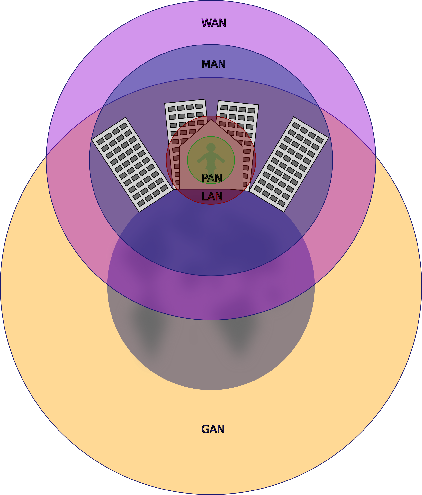

Untertitel
Je nach Größe, Funktionalität und Zweck unterscheidet man zwischen verschiedenen Netzwerktypen. Während PANs und LANs auch im privaten Umfeld genutzt werden, werden MANs, WANs und GANs hauptsächlich von Unternehmen und anderen großen Organisationen genutzt.

Abbildung 1: PAN, LAN, MAN, WAN und GAN
Es ist ein kleines Netzwerk, das Geräte in unmittelbarer Nähe zueinander verbindet, z.B. Mobiltelefone, Computermäuse und Laptops.
Meist werden hier Peer-to-Peer-Netzwerke genutzt. Typische Protokoll sind Bluetooth, ZigBee oder USB.
Es ist ein Netzwerk, das Geräte in einem kleinen geografischen Bereich miteinander verbindet, z.B. in einem Büro oder einem Haus.
Typische Protokoll sind hier Ethernet und TCP/IP.
Es ist ein größeres Netzwerk, das Geräte in einer Stadt oder einem Großraum verbindet.
In der Regel geht es darum, dass die LANs eines oder mehrer kooperierender Unternehmen in einer Stadt oder einem Großraum mit sicher und mit einer verlässlichen Verbindungsqualität – Quality of Service (QoS) – verbunden werden.
Dafür waren ursprünglich teure dezidierte Leitungen notwendig. Dank moderner Protokolle, wie Switched Multimegabit Data Service (SMDS) ist es möglich, dass Unternehmen ein gemeinsames Netz nutzen und dabei flexible Bandbreite buchen können.
Es ist ein Netzwerk, das Geräte über große Entfernungen hinweg verbindet, z.B. über mehrere Städte, Länder oder sogar Kontinente erstreckt.
Dies können Netzwerke sein, die von Internetanbietern genutzt werden, um die Daten ihrer Kunden zu transportieren und diese an das Internet anzubinden.
Im WAN stelle sich viele einzigartige Anforderungen sowohl an die Übertragungsmedien, als auch an die genutzten Protokolle.
Es ist ein Netzwerk, das Geräte auf der ganzen Welt miteinander verbindet, z.B. das Internet.
Weltweit agierende Unternehmen und Organisationen betreiben eigene GAN-Netzwerke, die aber auf die Infrastruktur des Internets zurückgreifen. Im Prinzip ist ein GAN, das größte denkbare WAN.